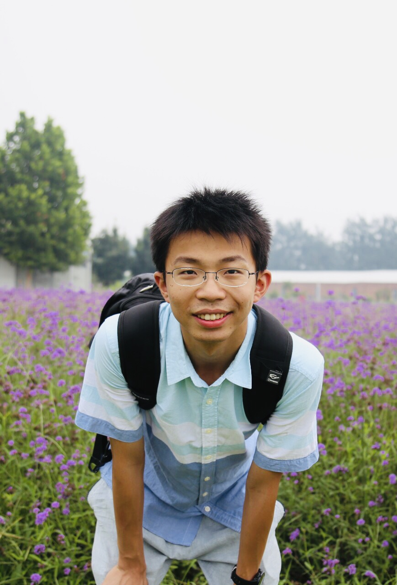

Ke Wang
|  | Ke Wang |
Short Bio
I am a fifth-year Ph.D. candidate in Electrical Engineering and Computer Sciences at UC Berkeley, working with Prof. Miki Lustig and Prof. Stella Yu. I am a member of Berkeley Artificial Intelligence Research (BAIR). I also work closely with Prof. Jon Tamir at UT Austin and Dr. Frank Ong at Stanford University. I graduated with honor from the department of Biomedical Engineering in Tsinghua University (Happy 110th birthday, Tsinghua!!). From 2015-2018, I had worked on Magnetic Resonance Temperature Imaging, supervised by Prof. Kui Ying and worked at The Advanced Theranostics and 3-D Imaging Laboratory (AT3D Lab), supervised by Prof. Hongen liao for my undergraduate thesis. My research interests lie in computational imaging, deep learning, signal processing, inverse problem, medical imaging and computer vision. I am an enthusiast of science, engineering, music, ice skating, rock climbing and everything related to medicine and healthcare! My name in Chinese is 王可.
I did a wonderful internship at Adobe Emerging Products Group in the summer of 2021 (Work successfully deployed at PhotoShope Camera)!
I'm interning at Adobe Research as a research scientist intern! (Started from May 2022)
 |
News
[3-2023] Our image harmonization work is accepted to CVPR 2023! Check out our project website!
[1-2023] I will be serving as reviewer for MICCAI 2023.
[12-2022] Our Direct Contrast Synthesis (MRF) paper is out on arXiv. Please check it out! [paper]
[5-2022] I presented our work on Rigorous Uncertainty Estimation for MRI Reconstruction at ISMRM 2022 as an oral presentation.
[4-2022] Our UFLoss paper was accecpted by MRM and is now published online! Please check it out! [paper][talk][code]
[2-2022] Three abstracts (1 first-authored and 2 co-authored) were accepted by ISMRM 2022 as oral presentations!
[2-2022] Our Data Crimes paper was accpeted for publication in PNAS! More infromation and details for this paper are avaible on Efrat's website.
[1-2022] I will be joining Adobe Research as a research scientist intern this summer, working on Computer Vision and Computational Photography with Eli Shechtman and Michaël Gharbi!
[12-2021] I passed my qualifying exam and became a Ph.D. candidate in EECS at UC Berkeley!
[9-2021] I will be presenting our work on Memory-efficient Learning for High-dimensional MRI Reconstruction at MICCAI 2021. Date & Time: September 29th (Wednesday), 09:30 - 11:00 (UTC). Welcome to check it out! [Preprint] [Poster] [Video]
[9-2021] Our preprint paper “Subtle Inverse Crimes: Naïvely training machine learning algorithms could lead to overly-optimistic results” is out on arXiv! This work raises a red flag regarding Naïve off-label usage of Big Data and reveals the vulnerability of mordern inverse problem solvers to the resulting bias. Welcome to check it out!
[8-2021] Our preprint paper “High Fidelity Deep Learning-based MRI Reconstruction with Instance-wise Discriminative Feature Matching Loss” is out on arXiv! Welcome to check it out! Code is available here! In this work, we present a patch-based unsupervised learned feature loss (UFLoss), which allows the training of DL-based reconstruction to obtain more detailed texture, finer features and sharper edges with higher overall image quality. Previously presented at ISMRM 2020.
[5-2021] I will be spending this summer at Adobe EPG team as a research intern, working on Computer Vision and Computational Photography with Xin Lu and Zichuan Liu. Let's make some impact!!
[3-2021] Our preprint full paper on “Memory-efficient learning for High-dimensional MRI Reconstruction” is out on arXiv! 6-2021 Update: This paper has been accepted by MICCAI 2021! In this work, we demonstrate a memory-efficient learning (MEL) framework, which uses far less GPU memory for training unrolled networks and enables new applications of DL to high-dimensional MRI.
[3-2021] Our preprint full paper on “OUTCOMES: Rapid Under-sampling Optimization achieves up to 50% improvements in reconstruction accuracy for multi-contrast MRI sequences” is out on arXiv!
[2-2021] First authored abstract “Memory-efficient learning for High-dimensional MRI Reconstruction” has been accepted by ISMRM 2021 (Magna cum laude award). Co-authored abstracts “DSLR+: Enhancing deep subspace learning reconstruction for high-dimensional MRI”, “Subtle Inverse Crimes: Naively using Publicly Available Images Could Make Reconstruction Results Seem Misleadingly Better!”(Magna cum laude award), “A GPU-accelerated Extended Phase Graph Algorithm for differentiable optimization and learning” have been accepted by ISMRM 2021.
[11-2020] Co-authored paper “CG‐SENSE revisited: Results from the first ISMRM reproducibility challenge” accpeted to Magnetic Resonance in Medicine. Preprint
[1-2020] First authored abstract “High-Fidelity Reconstruction with Instance-wise Discriminative Feature Matching Loss” has been accepted by ISMRM 2020 as an oral presentation.(Magna cum laude award)
[1-2020] First authored abstract “High Fidelity Direct-Contrast Synthesis from Magnetic Resonance Fingerprinting in Diagnostic Imaging” has been accepted by ISMRM 2020 as an oral presentation.(Summa cum laude award)
[10-2019] Our direct contrast synthesis work “Towards High Fidelity Direct-Contrast Synthesis from Magnetic Resonance Fingerprinting” has been accepted by Med-Neurips 2019 (Neurips workshop).
[9-2019] Our review paper “Computational MRI with Physics-based Constraints: Application to Multi-contrast and Quantitative Imaging” has been accepted by IEEE Singal Processing Magazine.
[5-2019] Our full paper “Non-Invasive Remote Temperature Monitoring Using Microwave-Induced Thermoacoustic Imaging” has been accepted as an oral presentation in EMBC 2019.
[11-2018] First authored paper “Reconstruction and Registration of Large-Scale Medical Scene Using Point Clouds Data from Different Modalities” won the Best Poster Award in ACCAS 2018.
Education
Ph.D. student, Department of Electrical Engineering and Computer Sciences, UC Berkeley, Berkeley, CA USA, Aug. 2018 - Present
B.E., Department of Biomedical Engineering, Tsinghua University, Beijing, China, Sep. 2014 - July 2018
Research Interests
Magnetic Resonance Imaging (MRI)
Image Reconstruction
Medical Imaging
Computer Vision
Computational Imaging
Inverse Problem
Deep Learning
Service
Reviewer for ISMRM 2022; EMBC 2022; MICCAI 2022
Reviewer for IEEE Transactions on Circuits and Systems for Video Technolog